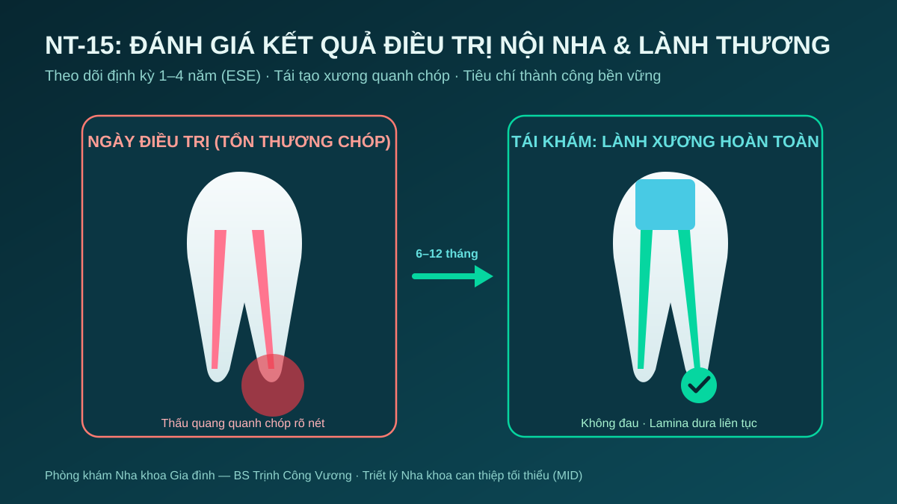

NT-15: Đánh giá kết quả điều trị Nội nha: Lành thương, theo dõi và tiêu chí thành công

Nhiều cô bác thường nghĩ rằng: "Lấy tủy và trám răng xong, hết đau là coi như thành công rồi!" Thực ra, sự biến mất của cơn đau mới chỉ là bước khởi đầu. Quá trình tái tạo và lành thương xương quanh chóp là một tiến trình sinh học cần thời gian tính bằng nhiều tháng, thậm chí vài năm. Hiểu rõ cách theo dõi và các tiêu chí đánh giá kết quả giúp cả bác sĩ lẫn người bệnh an tâm đồng hành để giữ chiếc răng bền vững suốt đời.
1. Quá trình lành thương sinh học diễn ra như thế nào?
Khi nguồn vi khuẩn bên trong hệ thống ống tủy được loại bỏ và trám bít kín ba chiều, hệ miễn dịch của cơ thể tại vùng chóp không còn phải "chiến đấu" nữa. Các tế bào hủy cốt bào ngừng tiêu xương, nhường chỗ cho nguyên bào xương (osteoblasts) và nguyên bào xê-măng tái tạo lại bè xương mới, thu nhỏ dần vùng thấu quang và phục hồi lại đường viền phiến cứng (lamina dura) bình thường quanh chóp chân răng.
2. Thời gian theo dõi khuyến cáo (Theo Hiệp hội Nội nha Châu Âu – ESE)
- Giai đoạn ngắn hạn (Sau điều trị 1–7 ngày): Răng có thể hơi ê tức nhẹ khi chạm vào trong 2–3 ngày đầu do phản ứng viêm nhẹ của dây chằng nha chu, sau đó dịu dần hoàn toàn.
- Tái khám sau 1 năm: Là cột mốc quan trọng đầu tiên để chụp X-quang đánh giá sự thu nhỏ kích thước tổn thương quanh chóp. Đa số tổn thương nhỏ và vừa sẽ lành hoàn toàn trong vòng 6–12 tháng.
- Theo dõi đến 4 năm (với tổn thương lớn): Nếu sau 1 năm tổn thương đã thu nhỏ rõ rệt nhưng chưa biến mất hoàn toàn, cần tiếp tục theo dõi định kỳ hằng năm cho đến 4 năm. Nếu sau 4 năm tổn thương vẫn không thu nhỏ hoặc xuất hiện triệu chứng trở lại thì mới kết luận chưa lành thương để cân nhắc nội nha lại hoặc cắt chóp.
3. Tiêu chí đánh giá kết quả điều trị Nội nha
Một ca điều trị nội nha được đánh giá qua sự kết hợp chặt chẽ giữa lâm sàng và hình ảnh X-quang:
Thành công (Lành thương hoàn toàn – Complete Healing):
- Lâm sàng: Không đau tự phát, không nhạy cảm khi gõ hay sờ vùng chóp, không sưng, không còn lỗ rò, mô nướu quanh răng bình thường và chiếc răng ăn nhai tốt như răng thật.
- X-quang: Khoảng dây chằng nha chu bình thường, phiến cứng (lamina dura) liên tục hoàn toàn quanh chóp, không còn vùng thấu quang bệnh lý; phục hồi thân răng phía trên kín khít.
Đang lành thương (Healing / Uncertain):
- Lâm sàng hoàn toàn bình thường (không đau, ăn nhai tốt), trên phim X-quang vùng thấu quang quanh chóp thu nhỏ kích thước rõ rệt so với phim trước điều trị nhưng chưa lấp đầy xương 100% (thường gặp trong 6–24 tháng đầu hoặc lành thương dạng sẹo xơ – scar tissue ở các nang lớn vùng răng cửa trên). Cần tiếp tục theo dõi định kỳ, không vội can thiệp lại.
Thất bại (Không lành thương – Non-healing):
- Có triệu chứng lâm sàng dai dẳng (đau khi nhai, sưng tái đi tái lại, có lỗ rò mới hoặc cũ không đóng), HOẶC trên phim X-quang thấy tổn thương quanh chóp mới xuất hiện, giữ nguyên kích thước sau 4 năm hoặc lan rộng thêm. Lúc này cần tìm nguyên nhân (sót ống tủy, hở phục hồi thân răng, nứt chân răng...) để có hướng xử trí kịp thời.
Lời nhắn nhủ kết thúc chuỗi 15 bài Nội nha từ Bác sĩ Trịnh Công Vương
Điều trị Nội nha là một hành trình bảo tồn đầy nhân văn: giữ lại sự sống cho tủy răng khi còn cơ hội (VPT), và giữ lại chiếc răng thật vững chắc trên cung hàm khi tủy không thể giữ được nữa. Cô bác hãy đừng quên tái khám định kỳ mỗi 6–12 tháng để bác sĩ kiểm tra độ kín khít của miếng trám/mão răng và theo dõi sự lành thương bền vững của chiếc răng đã điều trị nhé!
Địa chỉ: Số 15 đường Võ Nguyên Giáp, phường Đức Xuân, tỉnh Thái Nguyên
Hotline & Zalo tư vấn trực tiếp: 0912 343 858 · Website: https://tcvuong6-wq.github.io/bsvuong-web/